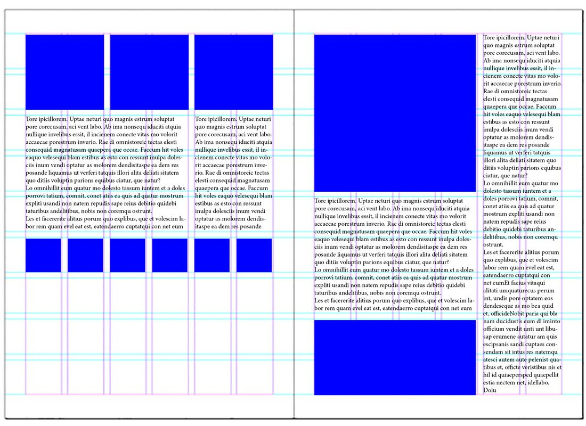

Фиксированное число колонок равной ширины и возможность задавать модулю ширину в виде произвольного числа колонок от 1 до максимального.
Можно создавать 2-x, 3-х, 4-х колоночные сетки, но это не универсальный подход.
12 / 1 = 12
12 / 2 = 6
12 / 3 = 4
12 / 4 = 3
12 / 6 = 2
12 /12 = 1
| ширина в колонках | имя класса | max классов в row |
|---|---|---|
| 12 | col-12 | 1 |
| 11 | col-11 | 1 |
| 10 | col-10 | 1 |
| 9 | col-9 | 1 |
| 8 | col-8 | 1 |
| 7 | col-7 | 1 |
| 6 | col-6 | 2 |
| 5 | col-5 | 2 |
| 4 | col-4 | 3 |
| 3 | col-3 | 4 |
| 2 | col-2 | 6 |
| 1 | col-1 | 12 |
See the Pen css modules grid combination 1 - 12 by Gennadiy (@Gorbulin) on CodePen.
See the Pen css modules grid float-left by Gennadiy ( @Gorbulin) on CodePen.
See the Pen css modules grid display: inline-block by Gennadiy ( @Gorbulin) on CodePen.
See the Pen css modules grid display: table by Gennadiy ( @Gorbulin) on CodePen.
See the Pen css modules grid display: flex by Gennadiy ( @Gorbulin) on CodePen.
See the Pen css modules grid responsive by Gennadiy (@Gorbulin) on CodePen.
col-: < 576px
col-sm-: ≥ 576рх
col-md-: ≥ 768рх
col-lg-: ≥ 992рх
col-xl-: ≥ 1200рх
See the Pen css modules bootsrap grid by Gennadiy (@Gorbulin) on CodePen.
Документация на русском к bootstrap-4
Верстка макетов на первом изображении перейти к задачам